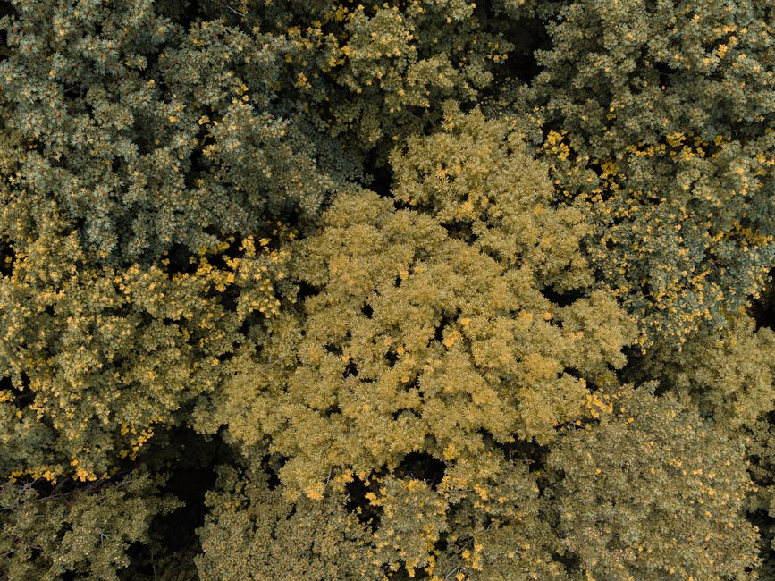

Empowering coastal inhabitants in Indonesia: leveraging AI, community-based approaches and local Weather measurements for enhanced climate adaptation and a thriving “blue economy”

This dataset helps researcher observe daily weather changes, analyze local climate patterns, and support research, planning, or environmental modeling through machine learning and data science in Balai Silvofishery Maros Regency, South Sulawes. Weather Data is a collection of environmental condition records gathered from a monitoring point located in Balai Silvofishery Maros Regency. The dataset includes key weather parameters such as temperature, humidity, rainfall, light intensity, wind speed, and other atmospheric indicators. This data can enable accurate weather predictions which are critical for small-scale fishing, ecotourism, and coastal protection. By empowering fishermen and women with real-time insights, the dataset can serve to build systems that enhance safety, optimise livelihoods, and support sustainable local, blue economies.
Data characteristics
[Auto-enriched from linked project resources]
License: CC-BY-SA 4.0. Data Type: Environmental monitoring records. Locations: Balai Silvofishery, Maros Regency, South Sulawesi Province and Pulo Aceh, Aceh Besar Regency, Aceh Province, Indonesia. Key Variables: temperature, humidity, rainfall, light intensity, wind speed. Collection period: since August 2025 (~7 months of data). Format: compressed archives (WS_MAROS_April-November2025.zip, WS_PULO_ACEHwoNew.txz). Known data quality issues: pressure and wind speed values entirely absent; temperature constant at 27.7C; humidity around 80%; irregular data intervals; Pulo Aceh data incomplete due to power outages and limited internet. Contact: infonesiainsan@gmail.com.
Source: https://github.com/insaninfonesia/WeatherData
Model characteristics
Model: https://colabs.commonroom.info/login/?next=%2F with username: guest_viewer and the password: guest_viewer
How to use
This data and AI models built on the data can enable systems that provide accurate weather predictions which are critical for small-scale fishing, ecotourism, and coastal protection. By empowering fishermen and women with real-time insights, such systems can enhance safety, optimise livelihoods, and support sustainable local, blue economies.
Datasets
Use cases
Additional resources
About
Powered by / Provided by: Common Room Networks Foundation https://commonroom.info/
Catalyzed by: FAIR Forward - AI for All, GIZ
Financed by: BMZ
Contact: Common Room Networks Foundation (email.commonroom@gmail.com)